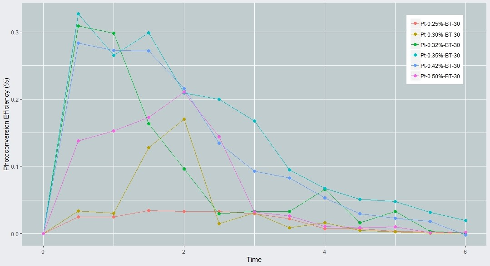

Photoconversion
From June 26 to July 27, 2018, I interned at the South Korean university Daegu-Gyeongbuk Institute of Science and Technology
Department of Energy Science and Engineering under Professor Su-Il In. I assisted graduate students Saurav Sorcar and Ali
Shahzad in their effort to develop a material that uses sunlight to convert carbon dioxide into hydrocarbon fuel at
industrial efficiencies.
In a break from my previous experience, I worked in the lab every day, setting up photocatalytic experiments and
sythesizing samples. I was able to put my data science skills to use, however, as I wrote an R script to calculate and plot
incremental efficiencies and derivitaves of the sample output, data that was an integral part of the paper that I co-authored
on the subject.

The paper below discusses the results of our reduced blue-titania photocatalyst, sensitized with bimetallic Cu–Pt nanoparticles,
and its world-class sustained and peak efficiencies.
- Sorcar, Saurav, et al. “CO2, Water, and Sunlight to Hydrocarbon Fuels: a Sustained Sunlight to Fuel (Joule-to-Joule) Photoconversion Efficiency of 1%.” Energy & Environmental Science, 21 May 2019, doi:10.1039/c9ee00734b.